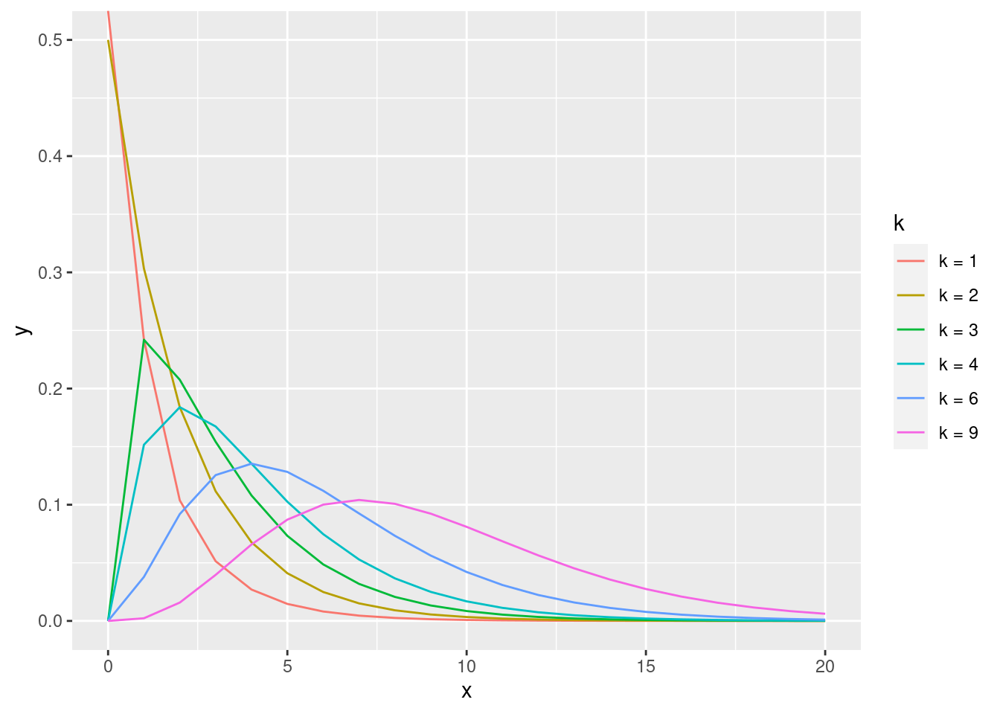

4 Distribuições derivadas da Normal
4.1 Distribuições amostrais
4.1.1 Qui-Quadrado
A distribuição qui-quadrado pode ser simulada a partir da distribuição normal. Por definição, se \(Z_{1},Z_{2},\ldots Z_{k}\ \) , forem k distribuições normais padronizadas (ou seja, média 0 e desvio padrão 1) independentes, então a soma de seus quadrados é uma distribuição qui-quadrado com k graus de liberdade:
\[\chi_{k}^{2}=Z_{1}^{2}+Z_{2}^{2}+\ldots +Z_{k}^{2}\,\]
a definição é que a soma de duas qui-quadrado independentes também é uma qui-quadrado: \[\chi _{a}^{2}+\chi _{b}^{2}=\chi _{{a+b}}^{2}.\] Definição: Se X é uma v.a. com densidade
\[ f_{x} (x) = \frac{(\frac{1}{2})^\frac{k}{2}}{\Gamma(k/2)}x^{k/2-1}e^{-\frac{1}{2}x} * I{(0, \infty)}(x) \] então \(X\) segue uma distribuiçãao qui-quadrado com k graus de liberdade (denotaremos \(X \sim \chi_{k}^{2}\)), k inteiro.
Propriedades:
- \(E[X] = \frac{k/2}{1/2} = k\) e \(V[X] = \frac{k/2}{(1/2)^2} = 2k\);
- \(M_{x}(t)=[\frac{1/2}{1/2-t}]^{k/2} = [\frac{1}{1-2t}]^{k/2}\);
Caso Gama:
A distribuição \(\chi_{k}^{2}\) é um caso particular da distribuição gama com parâmetros forma (\(k\)) e escala(\(\theta\)) dados respectivamente por \(\alpha = k/2\) e \(\beta = {\theta} = 2\).
\[ \chi_{k}^{2} \sim Gama(\frac{k}{2},{2}) \] Ou seja, se quisermos fazer uma inferência sobre um conjunto de v.a.’s com distribuição \(Gama(a, \beta)\) parâmetro \(\theta\).
\[ \theta = 2 \]
Gráfico da distribuição qui quadrado
Gráfico da distribuição gama com parâmetros (k/2, 2)
4.1.2 F
O valor observado de uma variável aleatória de distribuição \(F\) com parâmetros \(m\) e \(n\) surge como a razão de dois valores observados de distribuição qui-quadrado apropriadamente escalados:
\[ X = \frac{U/m}{V/n} \sim F_{m,n}, \]
em que
- \(U\) e \(V\) têm distribuições qui-quadrado com graus de liberdade \(m\) e \(n\) respectivamente e
- \(U\) e \(U\) são independentes.
\[ U = \chi_{m}^{2} \] \[ V = \chi_{n}^{2} \] \[ U \perp V \]
Definição: Se X é uma v.a. com densidade
\[ f_{x} (x) = \frac{\Gamma(\frac{m+n}{2})(\frac{m}{n})^{m/2}x^{\frac{m}{2}-1}}{\Gamma(\frac{m}{2})\Gamma(\frac{n}{2})[1+\frac{mx}{n}]^{\frac{m+n}{2}}} * I{(0, \infty)}(x). \]
Propriedades:
- \(E[X] = \frac{n}{n-2}\) para n > 2
- \(V[X] = \frac{2n^2(m+n -2)}{m(n-2)^2(n - 4)}\) para n > 4;
- \(M_{x}(t)=\frac{\frac{[\frac{1}{1-2t}]^{m/2}}{m}}{\frac{[\frac{1}{1-2t}]^{n/2}}{n}} = \frac{1^{\frac{m-n}{2}}n}{(1-2t)^{\frac{m-n}{2}}m}\), t < m; t < n;
Equivalentemente, a variável aleatória da distribuição F também pode ser escrita como
\({\displaystyle X={\frac {s_{1}^{2}}{\sigma _{1}^{2}}}\;/\;{\frac {s_{2}^{2}}{\sigma _{2}^{2}}}}\)
em que \({\displaystyle s_{1}^{2}}\) e \({\displaystyle s_{2}^{2}}\) são as somas dos quadrados \({\displaystyle S_{1}^{2}}\) e \({\displaystyle S_{2}^{2}}\) de dois processos normais com variâncias \({\displaystyle \sigma _{1}^{2}}\) e \({\displaystyle \sigma _{2}^{2}}\) divididas pelo número correspondente de \(\chi ^{2}\) graus de liberdades.
\(d_{1}\) e \(d_{2}\) são respectivamente \({\displaystyle s_{1}^{2}={\frac {S_{1}^{2}}{d_{1}}}}\) e \({\displaystyle s_{2}^{2}={\frac {S_{2}^{2}}{d_{2}}}}\).
4.1.3 T
\[ X = \frac{Z}{\sqrt{U/k}} \sim t_{k}, \]
4.2 Teoremas
Se \(X_{i}\sim N(0;1), i = 1,..., k\) são independentes, então
\[ U = \sum_{i=1}^{k}(x_{i})^2 \sim \chi _{k}^2 \]
Isto é, U tem distribuição qui-quadrado com k graus de liberdade